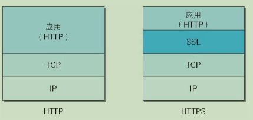

图解HTTP
条评论1 在浏览器中输入一个网址，按下回车后，发生了什么？
2 简单的HTTP协议
2.1HTTP协议用于客户端和服务器端之间的通信
请求访问文本或图像等资源的一端称为客户端，而提供资源相应的一端称为服务器端。
2.2通过请求和响应的交换达成通信
HTTP协议规定，请求从客户端发出，最后服务器端响应这个请求并返回。
请求报文是由请求方法(GET、POST等)、请求URI、协议版本(/http1.1)、可选的请求首部字段和内容实体构成的。
响应报文基本上由协议版本、状态码(表示请求成功或失败的数字代码)、用以解释状态码的原因短语、可选的响应首部字段以及实体主体构成。
2.3HTTP是不保存状态的协议
HTTP是一种不保存状态，即无状态stateless协议。HTTP协议自身不对请求和响应之间的通信状态进行保存。也就是说在HTTP这个级别，协议对于发送过的请求或响应都不做持久化处理。
使用HTTP协议，每当有新的请求发送时，就会有对应的新响应产生。协议自身并不保留之前一切的请求或响应报文的信息。这是为了更快地处理大量事务，确保协议的可伸缩性，而特意把HTTP协议设计成如此简单的。
但，随着web的不断发展，因无状态而导致业务处理变得棘手的情况增多，比如，用户登陆到一家购物网站，即使他跳转到该站的其他页面后，也需要能保持该用户的登录状态。针对这个实例，网站为了能够掌握是谁送出的请求，需要保存用户的状态。
HTTP/1.1虽然是无状态协议，但为了实现期望的保持状态的功能，引入了cookie技术，有了cookie再用HTTP协议通信，就可以管理状态了。
2.4请求URI定位资源
HTTP协议使用URI定位互联网上的资源。
当客户端请求访问资源而发送请求时，URI需要将作为请求报文中的请求URI包含在内。
指定请求URI的方式有很多：一、URI为完整的请求URI，二、在首部字段host中写明网络域名或ip地址。如果不是访问特定资源而是对服务器本身发起请求，可以用一个星号来代替请求URL。
2.5告知服务器意图的HTTP方法
http/1.1中可使用的方法有如下：
GET：获取资源
GET方法用来请求访问已被URI识别的资源。指定的资源经服务器端解析后返回响应内容。也就是说，如果请求的资源是文本，那就保持原样返回；如果是CGI(通用网关接口)那样的程序，则返回经过执行后的输出结果。
POST：传输实体主体
POST方法用来传输实体的主体。
虽然用GET方法也可以传输实体的主体，但一般不用GET方法进行传输，而是用POST方法。
PUT：传输文件
PUT方法用来传输文件。就像FTP协议的文件上传一样，要求在请求报文的主体中包含文件内容，然后保存到请求URI指定的位置。
但是，鉴于HTTP/1.1的PUT方法自身不带验证机制，任何人都可以上传文件，存在安全性问题，因此一般的web网站不使用该方法。
HEAD：获得报文首部
HEAD方法和GET方法一样，只是不返回报文主体部分，用于确认URI的有效性及资源更新的日期时间等。
DELETE：删除文件
DELETE方法按请求URI删除制定的资源。
Http/1.1的DELETE方法本身和PUT方法一样不带验证机制。
OPTIONS：询问支持的方法
OPTIONS方法用来查询针对请求URI指定的资源支持的方法。
TRACE：追踪路径
TRACE方法是让web服务器端将之前的请求通信环回给客户端的方法。
CONNECT：要求用隧道协议连接代理
CONNECT方法要求在与代理服务器通信时建立隧道，实现用隧道协议进行TCP通信。主要使用SSL和TLS协议把通信内容加密后经网络隧道传输。
2.6使用方法下达命令
向请求URI指定的资源发送请求报文时，采用称为方法的命令。
方法的作用在于，可以指定请求的资源按期望产生某种行为。
2.7持久连接节省通信量
HTTP协议的初始版本中，每进行一次http通信就要断开一次tcp连接。
随着http的普及，文档中包含大量图片的情况多了起来。比如，使用浏览器浏览一个包含多张图片的html页面时，在发送请求访问html页面资源的同时，也会请求该html页面里包含的其他资源。因此，每次的请求都会造成无谓的tcp连接建立和断开，增加通信量的开销。
2.7.1持久连接
为解决上述tcp连接问题，http/1.1和一部分的http/1.0想出了持久连接(HTTPkeep-alive)的方法。持久连接的特点是，只要一端没有明确提出断开连接，则保持tcp连接状态。
在HTTP/1.1中，所有的连接默认都是持久连接，但是在http/1.0内并未标准化。
2.7.2管线化
持久连接使得多数请求以管线化(pipelining)方式发送成为可能。从前发送请求后需等待并收到响应，才能发送下一个请求。管线化技术出现后，不用等待响应亦可直接发送下一个请求。这样就能做到同时并行发送多个请求，而不需要一个接一个地等待响应了。
2.8使用cookie的状态管理
Cookie技术通过在请求和响应报文中写入cookie信息来控制客户端的状态。
cookie会根据从服务器端发送的响应报文内的一个叫做set-cookie的首部字段信息，通知客户端保存cookie。当下次客户端再往该服务器发送请求时，客户端会自动在请求报文中加入cookie值后发送出去。
服务器端发现客户端发送过来的cookie后，回去检查究竟是从哪一个客户端发来的连接请求，然后对比服务器上的记录，最后得到之前的状态信息。
3 HTTP报文内的HTTP信息
3.1HTTP报文
用于http协议交互的信息被称为http报文。客户端的http报文叫做请求报文，服务器端的叫做响应报文。http报文本身是由多行数据构成的字符串文本。
HTTP报文大致可分为报文首部和报文主体两块。通常，并不一定要有报文主体。
4 返回结果的http状态码
http状态码负责展示客户端http请求的返回结果、标记服务器端的处理是否正常、通知出现的错误等工作。
4.1状态码告知从服务器端返回的请求结果

4.2 2XX成功
200OK：表示从客户端发来的请求在服务器端被正常处理了
204NO Content：表示服务器接受的请求已成功处理，但在返回的响应报文中不含实体的主体部分。
206Partial Content：表示客户端进行了范围请求，而服务器成功执行了这部分的GET请求。响应报文中包含由Content-Range指定范围的实体内容。
4.3 3XX重定向
3XX响应结果表明浏览器需要执行某些特殊的处理以正确处理请求。
301Moved Permanently：永久性重定向。该状态码表示请求
7 确保web安全的HTTPS
在HTTP协议中有可能存在信息窃听或身份伪装等安全问题。使用HTTPS通信机制可以有效防止这些问题。
7.1HTTP的缺点
通信使用明文(不加密)，内容可能会被窃听。
不验证通信方的身份，因此有可能遭遇伪装。
无法证明报文的完整性，所以有可能已遭篡改。
7.2HTTP+加密+认证+完整性保护=HTTPS
7.2.1 HTTP加上加密处理和认证以及完整性保护后即是HTTPS
如果在HTTP协议通信过程中使用未经加密的明文，比如在WEB页面中输入信用卡号，如果这条通信线路遭到窃听，那么信用卡号就暴露了。
另外，对于HTTP来说，服务器也好，客户端也好，都是没有办法确认通信方的。因为很有可能并不是和原本预想的通信方在实际通信。并且还需要考虑到接收到的报文在通信途中已经遭到篡改这一可能性。
为了同一解决上述这些问题，需要在HTTP上再加入加密处理和认证等机制。
7.2.2 HTTPS是身披SSL外壳的HTTP
HTTPS并非是应用层的一种新协议。只是HTTP通信接口部分用SSL(Secure Socket Layer，安全套接字)和TLS(Transport Layer Security)协议代替而已。
通常，HTTP直接和TCP通信。当使用SSL时，则演变成HTTP先和SSL通信，再有SSL和TCP通信。

SSL是独立于HTTP的协议，不光是HTTP协议，其他运行在应用层的SMTP和Telnet等协议均可配合SSL协议使用。
7.2.3 相互交换密钥的公开密钥加密技术
SSL采用一种叫做公开密钥加密的加密处理方式。
共享密钥加密的困境
加密和解密同用一个密钥的方式成为共享密钥加密，也叫做对称密钥加密。以共享密钥加密时必须也将密钥也发给对方，可怎样才能安全地转交？在互联网上转发密钥时，如果通信被监听那么密钥就可落入攻击者之手，同时也就失去了加密的意义。另外还得设法安全地报关接收到的密钥。
使用两把密钥的公开密钥加密
公开密钥加密使用一对非对称的密钥。一把叫做私有密钥，另一把叫做公开密钥。私有密钥不能让其他任何人知道，而公开密钥则可以随意发布，任何人都可以获得。
使用公开密钥加密方式，发送密文的一方使用对方的公开密钥进行加密处理，对方收到被加密的信息后，再使用自己的私有密钥进行解密。利用这种方式，不需要发送用来解密的私有密钥，也不必担心密钥被攻击者窃听而盗走。
另外，要想根据密文和公开密钥，恢复到信息原文是异常困难的，因为解密过程就是在对离散对数进行求值，这并非轻而易举就能办到。
HTTPS采用混合加密机制
HTTPS采用共享密钥加密和公开密钥加密两者并用的混合加密机制。若密钥能够实现安全交换，那么有可能会考虑仅使用公开密钥加密来通信。但是公开密钥加密和共享密钥加密相比，其处理速度要慢。
7.2.4 证明公开密钥正确性的证书
公开密钥加密方式的问题是无法证明公开密钥本身就是货真价实的公开密钥。比如正准备和某台服务器建立公开密钥方式下的通信时，如何证明收到的公开密钥即使原本预想的那台服务器发行的公开密钥，或许在公开密钥传输途中，真正的公开密钥已经被攻击者替换掉了。
为了解决上述问题，可以使用由数字证书认证机构(CA，Certificate Authority)和其相关机关颁发的公开密钥证书。
数字证书认证机构处于客户端与服务器双方都可信赖的第三方机构的立场上。
数字证书认证的业务流程：首先，服务器的运营人员向数字证书认证机构提出公开密钥的申请。数字证书认证机构在判明提出申请者的身份之后，会对已申请的公开密钥做数字签名，然后分配这个已签名的公开密钥，并将该公开密钥放入公钥证书后绑定在一起。
服务器会将这份数字证书认证机构颁发的公钥证书发送给客户端，以进行公开密钥加密方式通信。公钥证书也可叫做数字证书或直接成为证书。
接到证书的客户端可使用数字证书认证机构的公开密钥，对那张证书上的数字签名进行验证，一旦验证通过，客户端便可明确两件事：一，认证服务器的公开密钥的是真实有效的数字证书认证机构；二，服务器的公开密钥是值得信赖的。
此处认证机关的公开密钥必须安全地转交给客户端，使用通信方式时，如何安全转交是一件很困难的事，因此，多数浏览器开发商发布版本时，会事先在内部植入常用认证机关的公开密钥。